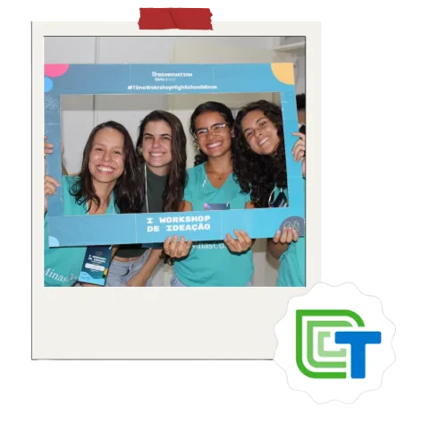

Karol Guimarães
Product Manager que constrói com IA
Crio agentes e automações que tiram o trabalho repetitivo do caminho do time de produto. A IA faz o rascunho, e a revisão humana fica sempre no fim.
Toque numa estrela para abrir o projeto.
Coisas que construí com IA
Agentes, skills e pipelines que resolvem problemas reais de negócio. Em todos, eu defini o problema, desenhei o fluxo e garanti a revisão humana.
Um agente de IA que traduz a interface para inglês e espanhol
Criei do zero um agente no Claude Code que traduz, revisa e cuida do glossário. Hoje, a maior parte das traduções passa pela revisão sem ajuste.
Ler o caseToolkit de IA para o time de Produto
Visio16 skills e 6 agentes no Claude Code, usados por 3 squads. Criei as skills de atas e de comunicação interna e a governança do kit.
Ler o casePipeline com IA para um ranking mensal de lojas
VisioAgentes escrevem e validam o e-mail para cerca de 730 gestores, e scripts geram os certificados. Eu defini como o processo deveria funcionar.
Ler o caseAgente que monta cronogramas de redes sociais
Projeto pessoalGemini, RAG e LangGraph. O agente entende o pedido, consulta as regras da marca e diz "não sei" quando não tem base.
Ler o caseConectaAção: IA para planejar e documentar um produto
UFLA, Engenharia de SoftwareUsei IA nos requisitos, no backlog, no protótipo navegável e na documentação. E conferi cada documento contra o que o time fez de fato.
Ler o caseTambém faço produto do começo ao fim
Discovery, backlog, protótipo, QA e liderança de time. Se quiser ver como eu trabalho além da IA, os cases estão aqui.
Backlog, discovery e qualidade numa squad AI-first
Um survey com 59 clientes mudou uma decisão de produto, e uma métrica honesta venceu uma métrica bonita.
Ler o case Comp JúniorZeus: liderando um produto do zero
Lidero 8 pessoas em dual-track para construir o sistema de gestão interna da empresa júnior.
Ler o case Comp JúniorReestruturei uma área e criei um funil de leads
Em 6 meses, o marketing saiu de posts soltos para 5 a 7 leads qualificados entregues ao comercial.
Ler o casePrazer, Karol
Estudo Sistemas de Informação na UFLA e sou técnica em Informática pela UFV. Passei 10 meses como PM na Visio, uma startup B2B AI-first, e hoje lidero a construção de um produto do zero na Comp Júnior.
Começo sempre pela raiz do problema. Uso IA para ganhar velocidade, mas o contexto de negócio e a régua de qualidade continuam sendo responsabilidade minha.

Onde tudo começou
Descobri produto antes de saber o nome disso. No ensino médio, participei do Technovation Girls, uma competição em que meninas encontram um problema real da comunidade e constroem um app para resolver. Depois, fui mentora de duas equipes na mesma competição, pelo Minas Coders.
Formação
- Sistemas de Informação, UFLA (2025 a 2028)
- Técnico em Informática, UFV (2022 a 2024)
Certificações
- AWS Certified Cloud Practitioner
- AWS Student Leader
- Product Management, PM3
- Em curso na PM3: AI Product Builder, Product Analytics e Product Discovery
Vamos construir alguma coisa com IA juntos?
Estou em Belo Horizonte e Região e quero construir soluções de IA que mudem a rotina de quem usa. Me chame por um destes canais.
Karol Guimarães, 2026